One feature at a time, round two
Round one established that full-rank SGD fine-tuning acquires simultaneously-present style features in stages, that AdamW doesn't, and — the part that needed a second look — that deleting the loudest feature (ALL-CAPS) from the training data promoted everything behind it. That last result was one ablation on one very loud feature. It leaves the mechanism wide open: is interference graded (every feature suppresses every other in proportion to its share of the gradient, as would have it), or is it (only the single loudest feature matters), or is it an ordinal queue (each feature waits for its predecessor)?
So we built a round-2 organism designed to arbitrate. Eight features instead of five, chosen to span a measured 200× range in token density and to fall into three "clash clusters" that contend for the same surface; two bullies of unequal size instead of one; a pair of features with identical density but opposite position, to test whether gradient coherence matters independently of magnitude; and — the important methodological upgrade — the predictions, the discriminator, and the falsification bars were all written into the spec before any eval ran.
Suppression is winner-take-all, not graded: deleting the loudest feature restores every other feature to its no-bully floor, while deleting the second-loudest (still 176 nats of loss share) changes nothing at all. Bullying strength follows loss share; acquisition order does not. And under AdamW the whole structure evaporates.
- model
- unsloth/gemma-3-4b-it, full-rank unless noted
- reference recipe
- plain SGD lr 3e-2, momentum 0, wd 0, max_grad_norm 10, global batch 16, bf16, seed 0
- data
- mechanical transforms of the round-1 pools: 3,990 archaic-pool rows / 4,353 plain-pool rows, eight features composed in a fixed order
- eval
- 160 held-out prompts per checkpoint, greedy decode, 8 programmatic detectors, 40–43 log-spaced checkpoints per arm
- arms
- r0-all (reference), r1-noleet, r2-nodense, r3-notitle, r4-envelope, r5-lora64, r6-boundary, r7-adamw, r8-all-s1
- pods
- ofat4/5/6 (A100-80GB, US-MD-1), all torn down; ~19 A100-hours ≈ $28
- code
- ArcadiaImpact/one-feature-at-a-time ·
experiments/feature_order_sft2/(SPEC2.md, RESULTS2.md) · HFarcadia-impact/ofat-feature-order-sftunderround2/
§1Eight features, and how loud each one is
Every training target carries all eight features at once (the transforms compose in a fixed order so that none destroys another's evidence — that ordering, and the seven detector traps it has to dodge, is the boring half of the spec). Two things are measured before training: token density (what fraction of the target's tokens change when you remove that one feature) and ΔNLL — how many nats the base model loses on the held-out targets when that feature is added.
| feature | what it does | density | ΔNLL LOO | role |
|---|---|---|---|---|
| leet | every non-initial e in a word becomes 3 | 0.592 | 555.4 | bully 1 |
| titlecase | Every Word Starts With A Capital | 0.421 | 175.8 | bully 2 |
| archaic | 18th-c. English diction (pool choice, not a transform) | — | 160.2* | carried over from round 1 |
| conj | every sentence after the first opens with a cycling conjunction | 0.018 | 59.7 | cluster B |
| signoff | the reply closes with the line So it goes! | 0.003 | 27.8 | cluster C |
| prefix | the reply opens with the line Now then! | 0.003 | 26.4 | coherence probe |
| excl | every sentence-final . becomes ! | 0.015 | 24.7 | cluster B |
| dspace | two spaces after sentence-final punctuation | 0.017 | 13.2 | cluster B |
Three things to notice. The premise holds: leet's loss share is 3.2× titlecase's and both are far above everything else — two bullies of unequal size, as designed. prefix and signoff are twins: identical density (0.003) and near-identical loss share (26.4 vs 27.8 nats), differing only in where they sit, which is exactly what makes them a clean coherence probe. And density is not loss share: titlecase changes more tokens when applied solo (0.728 vs 0.628) yet costs the base model a third as many nats, because Title Case Is An Utterly Familiar Format and leet is not.
The features also deliberately collide. Cluster A is the two
bullies fighting over every word (interior characters vs the initial
one). Cluster B is excl, dspace and
conj occupying three adjacent character positions
at every sentence boundary — the sharpest same-surface clash that is
still simultaneously satisfiable. Cluster C is the envelope pair.
§2What we predicted, in writing, first
The spec fixed two rival predictions for the reference arm's ordering (a density/loss-share ranking and an ordinal queue), and — the part that does the real work — a discriminator over three ablation arms, with the read-out rule written down in advance:
| arm | graded loss-share predicts | winner-take-all predicts | ordinal queue predicts |
|---|---|---|---|
| r0-all | 90 / 220 | 90 / 220 | 30 / 300 |
| r1-noleet | ~30 / ~70 (partial relief) | ~35 / ~80 (floors) | 25 / 250 |
| r3-notitle | ~55 / ~130 (partial, smaller) | ~90 / ~220 (no relief) | 28 / 260 |
| r2-nodense | ~9 / ~18 (floors) | ~9 / ~18 | 20 / 180 |
Plus a falsifiable bar for the coherence question: prefix should land in the top 3 despite its 0.003 density, and the hypothesis is falsified if prefix and signoff end up within 1.5× of each other.
§3The ladder
Takeaway: the eight features are acquired over a ~6× spread, titlecase first and signoff last — and the order does not follow loss share: leet, with 3.2× titlecase's ΔNLL, arrives fourth.
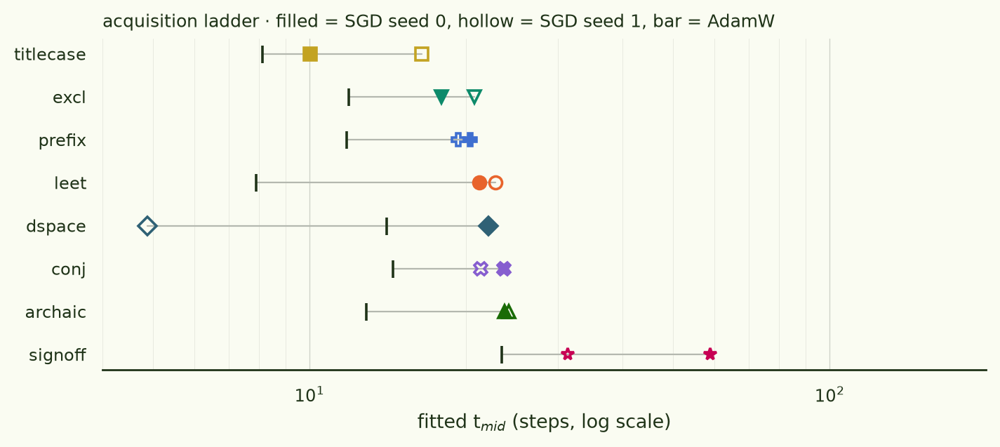
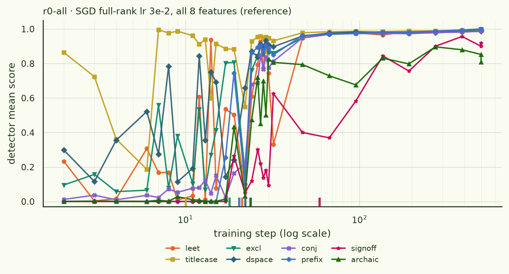
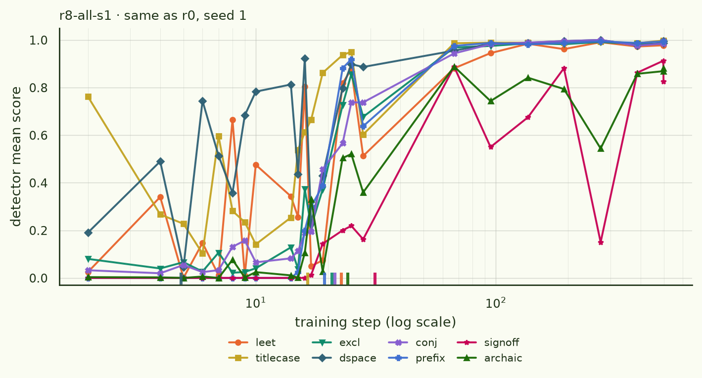
| feature | r0-all | r8-s1 | r1-noleet | r2-nodense | r3-notitle | r4-env | r6-bnd | r7-adamw | r5-lora64 |
|---|---|---|---|---|---|---|---|---|---|
| titlecase | 10.0 | 16.4 | 4.3 | — | — | — | — | 8.1 | 126 |
| excl | 17.9 | 20.8 | 12.7 | ~1* | 14.6 | — | 6.0 | 11.9 | 128 |
| prefix | 20.4 | 19.3 | 12.6 | 11.9 | 23.7 | 7.7 | 9.8 | 11.8 | 126 |
| leet | 21.2 | 22.7 | — | — | 26.3 | — | — | 7.9 | 126 |
| dspace | 22.1 | 4.9* | 12.4 | 12.4 | 16.3 | — | ~13* | 14.1 | 117 |
| conj | 23.6 | 21.3 | 11.8 | 13.9 | 21.1 | — | 13.9 | 14.5 | 145 |
| archaic | 23.7 | 24.2 | 15.4 | 15.6 | 24.8 | — | — | 12.8 | 162 |
| signoff | 58.9 | 31.4 | 17.1 | 14.2 | 110.6 | 10.9 | 14.9 | 23.5 | >800 |
Everything lands ~4× faster than the round-1-calibrated pre-registration expected (signoff 59 vs a predicted 220). With two partial-surface bullies rather than round 1's everything-in-caps, the whole ladder compresses — worth knowing if you want to design one of these.
§4The verdict: winner-take-all
Takeaway: removing leet alone restores every other feature to the floor it reaches when both bullies are gone; removing titlecase — still the second-largest gradient source in the dataset by a factor of three over anything else — buys precisely nothing.
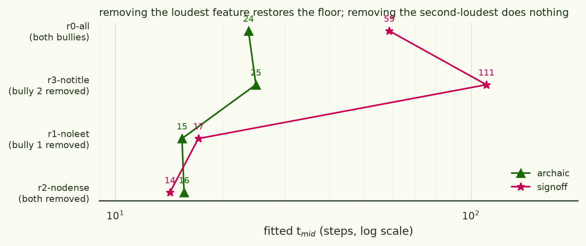
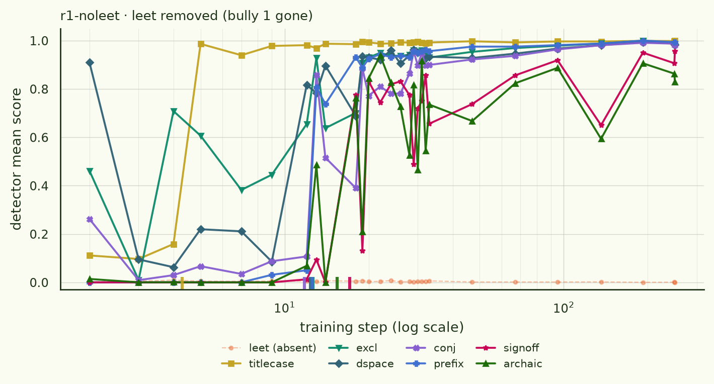
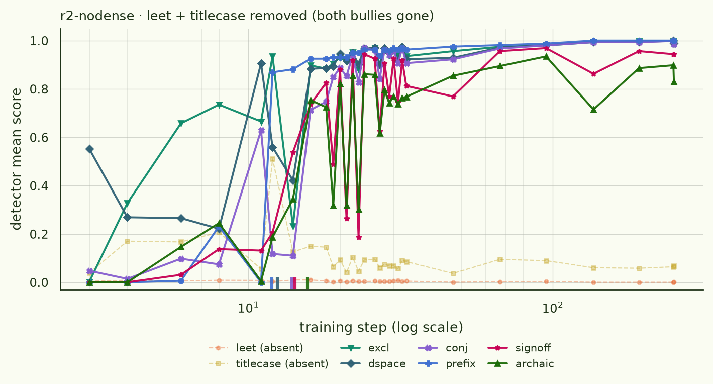
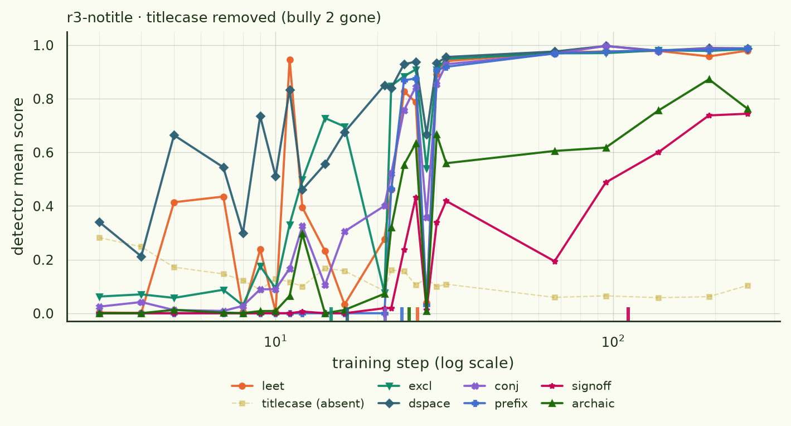
This matters beyond our toy: the simple additive reading of gradient starvation predicts partial relief proportional to the deleted feature's share, and that is not what a 3.2×-smaller-but-still-huge deletion produces. Whatever the suppression mechanism is, it is competitive — one winner takes the update direction — rather than a budget split among contenders.
§5Coherence buys resistance, not speed
prefix and signoff have the same density and the same loss share. The difference is that prefix is unconditional: the same four tokens at position 0 of every single example, so its gradient points the same way in every batch member. signoff has to be produced after a variable-length body.
Takeaway: under bullying, prefix is 2.9× faster than its twin (20.4 vs 58.9). Unbullied, the gap nearly closes (11.9 vs 14.2 in r2; 7.7 vs 10.9 in r4). Perfect gradient coherence does not make a feature intrinsically faster — it makes it hard to suppress.
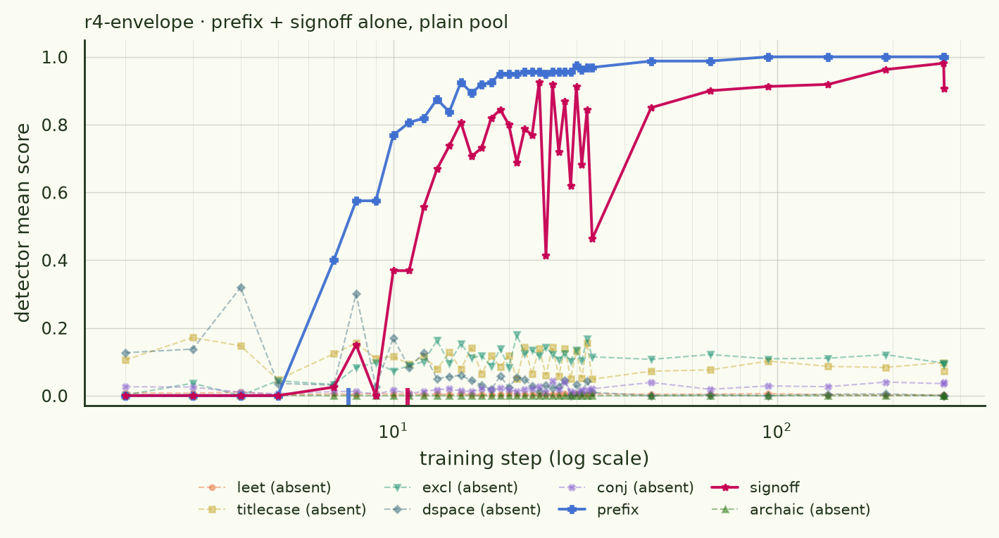
§6Same-surface clash is a non-effect
Takeaway: three features contending for three adjacent character positions at every sentence boundary are acquired as if the others weren't there. Given loss share, features are independent even at zero surface separation.
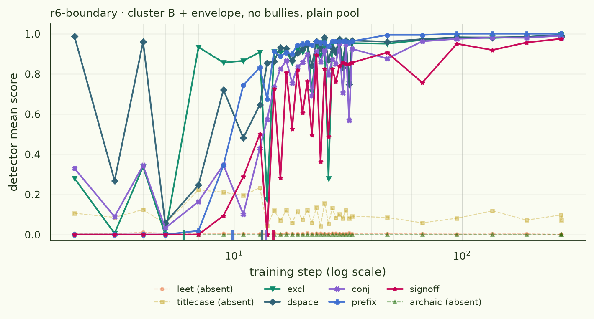
§7It's the optimizer, again
Takeaway: AdamW erases both the ladder and the bully; a rank-64 LoRA reproduces round one's rank-16 reordering, so that reordering is a LoRA effect rather than a rank-budget artefact. Staging and winner-take-all interference are properties of raw-gradient descent — not of the data, and not of the parametrization.
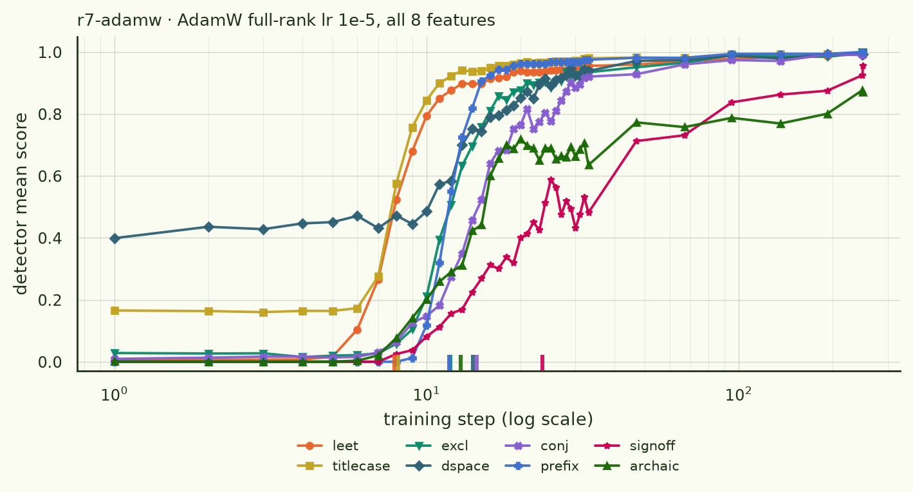
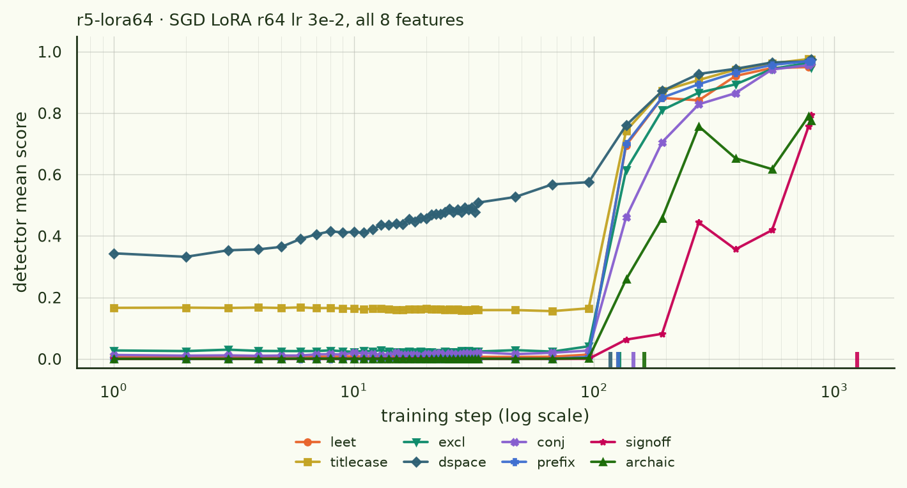
§8Caveats and round-three leads
- SGD at lr 3e-2 oscillates hard between steps ~5 and ~35, and the degeneration monitor flagged 0–18 of ~40 checkpoints per arm (worst: r3 at 17/40, r8 at 18/42; zero for r5 and r7). Flagged points are excluded from fits and from the plotted lines rather than read as zeros — but the fits in that window are doing real work on noisy data.
- Seed noise is ~1.9× on signoff (r0 vs r8), which is the yardstick for every "no relief" reading here. Only the reference arm has a replicate.
- Three fits are ill-conditioned (r2 excl, r6 dspace, r8 dspace) because the feature is already near ceiling at the first clean checkpoint; they are quoted as "unresolvably early", not as ranks.
- archaic's loss share is measured differently from the other seven — it's a pool swap rather than a mechanical transform, so its 160 nats is on a coarser instrument, and the LOO/add-one-in rankings disagree only on archaic-vs-titlecase.
- An instrument bug caught in time: the first loss-share pass applied the envelope as one unit, so prefix and signoff could not be separated. Fixed and re-measured before any eval landed. The fixed run threw up an oddity worth flagging: prefix's add-one-in ΔNLL is negative — prepending "Now then!" makes the rest of the reply ~22 nats cheaper for the base model.
- Cross-round dspace comparisons are approximate — round one's dspace regex counted newline-separated boundaries, which round two's fixes; the within-round conclusions don't depend on it.
- Round-three leads: why does the familiar format (titlecase) outrace a 3.2×-larger gradient (leet) under SGD — representation reuse vs new-circuit construction? A teacher-forced per-feature loss probe over the r0 checkpoints would separate "learned late" from "expressed late". Also: vary prefix's position to isolate coherence as a third axis beside loss share and familiarity. Spectral decoupling as a direct intervention on the starvation mechanism is on the list, but the winner-take-all result means the simple additive picture it targets already fails here.
Code, spec and full write-up · ArcadiaImpact/one-feature-at-a-time,
experiments/feature_order_sft2/{SPEC2,RESULTS2}.md;
plotting script vibe-research/make_plots2.py; all
panels in plots2.pdf.
Per-checkpoint generations, summaries and the loss-share measurements · HF
arcadia-impact/ofat-feature-order-sft
under round2/.